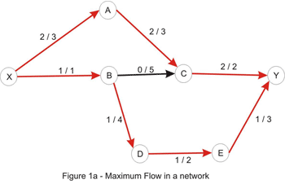
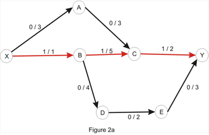
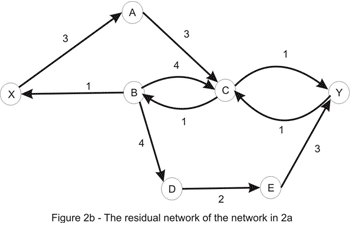
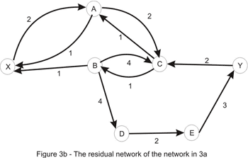
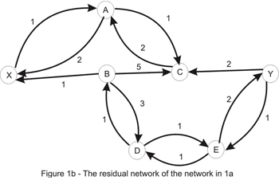
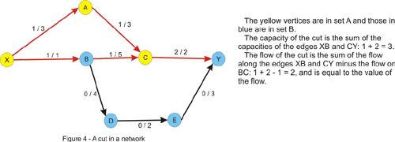
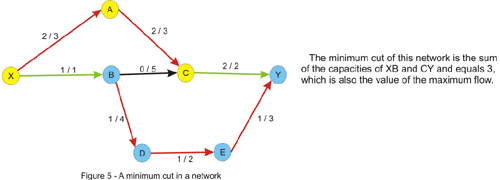

Member Search

|
By _efer_
TopCoder Member
Introduction
This article covers a problem that often arises in real life situations and, as expected, in programming challenges, with Top Coder being no exception. It is addressed mostly to coders who are not familiar with the subject, but it may prove useful to the more experienced as well. Lots of papers have been written, and there are many algorithms known to solve this problem. While they are not the fastest, the algorithms presented here have the advantage of being simple and efficient, and because of this they are usually preferred during a challenge setup. The reader is advised to read the article on graph theory first, as the concepts presented there are needed to understand those presented here.The Standard Maximum Flow Problem
So, what are we being asked for in a max-flow problem? The simplest form that the statement could take would be something along the lines of: "A list of pipes is given, with different flow-capacities. These pipes are connected at their endpoints. What is the maximum amount of water that you can route from a given starting point to a given ending point?" or equivalently "A company owns a factory located in city X where products are manufactured that need to be transported to the distribution center in city Y. You are given the one-way roads that connect pairs of cities in the country, and the maximum number of trucks that can drive along each road. What is the maximum number of trucks that the company can send to the distribution center?"
A first observation is that it makes no sense to send a truck to any other city than Y, so every truck that enters a city other than Y must also leave it. A second thing to notice is that, because of this, the number of trucks leaving X is equal to the number of trucks arriving in Y.
Rephrasing the statement in terms of graph theory, we are given a network - a directed graph, in which every edge has a certain capacity c associated with it, a starting vertex (the source, X in the example above), and an ending vertex (the sink). We are asked to associate another value f satisfying f ≤ c for each edge such that for every vertex other than the source and the sink, the sum of the values associated to the edges that enter it must equal the sum of the values associated to the edges that leave it. We will call f the flow along that edge. Furthermore, we are asked to maximize the sum of the values associated to the arcs leaving the source, which is the total flow in the network.
The image below shows the optimal solution to an instance of this problem, each edge being labeled with the values f/c associated to it.

How to Solve It
Now how do we actually solve the problem? First, let us define two basic concepts for understanding flow networks: residual networks and augmenting paths. Consider an arbitrary flow in a network. The residual network has the same vertices as the original network, and one or two edges for each edge in the original. More specifically, if the flow along the edge x-y is less than the capacity there is a forward edge x-y with a capacity equal to the difference between the capacity and the flow (this is called the residual capacity), and if the flow is positive there is a backward edge y-x with a capacity equal to the flow on x-y. An augmenting path is simply a path from the source to the sink in the residual network, whose purpose is to increase the flow in the original one. It is important to understand that the edges in this path can point the "wrong way" according to the original network. The path capacity of a path is the minimum capacity of an edge along that path. Let's take the following example:


By considering the path X_A_C_Y, we can increase the flow by 1 - the edges X_A and A_C have capacity of 3, as in the original network, but the edge C_Y has capacity 1, and we take the minimum of these values to get the path capacity. Increasing the flow along this path with 1 yields the flow below:

The value of the current flow is now 2, and as shown in Figure 1, we could do better. So, let's try to increase the flow. Clearly, there is no point in considering the directed paths X_A_C_Y or X_B_D_E_Y as the edges C_Y and X_B, respectively, are filled to capacity. As a matter of fact, there is no directed path in the network shown above, due to the edges mentioned above being filled to capacity. At this point, the question that naturally comes to mind is: is it possible to increase the flow in this case? And the answer is yes, it is. Let's take a look at the residual network:

Let's consider the only path from X to Y here: X_A_C_B_D_E_Y. Note that this is not a path in the directed graph, because C_B is walked in the opposite way. We'll use this path in order to increase the total flow in the original network. We'll "push" flow on each of the edges, except for C_B which we will use in order to "cancel" flow on B_C. The amount by which this operation can be performed is limited by the capacities of all edges along the path (as shown in Figure 3b). Once again we take the minimum, to conclude that this path also has capacity 1. Updating the path in the way described here yields the flow shown in Figure 1a. We are left with the following residual network where a path between the source and the sink doesn't exist:

This example suggests the following algorithm: start with no flow everywhere and increase the total flow in the network while there is an augmenting path from the source to the sink with no full forward edges or empty backward edges - a path in the residual network. The algorithm (known as the Ford-Fulkerson method) is guaranteed to terminate: due to the capacities and flows of the edges being integers and the path-capacity being positive, at each step we get a new flow that is closer to the maximum. As a side note, the algorithm isn't guaranteed to even terminate if the capacities are irrationals.
What about the correctness of this algorithm? It is obvious that in a network in which a maximum flow has been found there is no augmenting path, otherwise we would be able to increase the maximum value of the flow, contradicting our initial assumption. If the converse of this affirmation is true, so that when there is no augmenting path, the value of the flow has reached its maximum, we can breathe a sigh of relief, our algo is correct and computes the maximum flow in a network. This is known as the max-flow min-cut theorem and we shall justify its correctness in a few moments.
A cut in a flow network is simply a partition of the vertices in two sets, let's call them A and B, in such a way that the source vertex is in A and the sink is in B. The capacity of a cut is the sum of the capacities of the edges that go from a vertex in A to a vertex in B. The flow of the cut is the difference of the flows that go from A to B (the sum of the flows along the edges that have the starting point in A and the ending point in B), respectively from B to A, which is exactly the value of the flow in the network, due to the entering flow equals leaving flow - property, which is true for every vertex other than the source and the sink.

Notice that the flow of the cut is less or equal to the capacity of the cut due to the constraint of the flow being less or equal to the capacity of every edge. This implies that the maximum flow is less or equal to every cut of the network. This is where the max-flow min-cut theorem comes in and states that the value of the maximum flow through the network is exactly the value of the minimum cut of the network. Let's give an intuitive argument for this fact. We will assume that we are in the situation in which no augmenting path in the network has been found. Let's color in yellow, like in the figure above, every vertex that is reachable by a path that starts from the source and consists of non-full forward edges and of non-empty backward edges. Clearly the sink will be colored in blue, since there is no augmenting path from the source to the sink. Now take every edge that has a yellow starting point and a blue ending point. This edge will have the flow equal to the capacity, otherwise we could have added this edge to the path we had at that point and color the ending point in yellow. Note that if we remove these edges there will be no directed path from the source to the sink in the graph. Now consider every edge that has a blue starting point and a yellow ending point. The flow on this edge must be 0 since otherwise we could have added this edge as a backward edge on the current path and color the starting point in yellow. Thus, the value of the flow must equal the value of the cut, and since every flow is less or equal to every cut, this must be a maximum flow, and the cut is a minimum cut as well.
In fact, we have solved another problem that at first glance would appear to have nothing to do with maximum flow in a network, ie. given a weighted directed graph, remove a minimum-weighted set of edges in such a way that a given node is unreachable from another given node. The result is, according to the max-flow min-cut theorem, the maximum flow in the graph, with capacities being the weights given. We are also able to find this set of edges in the way described above: we take every edge with the starting point marked as reachable in the last traversal of the graph and with an unmarked ending point. This edge is a member of the minimum cut.

Augmenting-Path Algorithms
The neat part of the Ford-Fulkerson algorithm described above is that it gets the correct result no matter how we solve (correctly!!) the sub-problem of finding an augmenting path. However, every new path may increase the flow by only 1, hence the number of iterations of the algorithm could be very large if we carelessly choose the augmenting path algorithm to use. The function max_flow will look like this, regardless of the actual method we use for finding augmenting paths:
int max_flow()
result = 0
while (true)
// the function find_path returns the path capacity of the
augmenting path found
path_capacity = find_path()
// no augmenting path found
if (d = 0) exit while
else result += path_capacity
end while
return result
To keep it simple, we will use a 2-dimensional array for storing the
capacities of the residual network that we are left with after each step
in the algorithm. Initially the residual network is just the original
network. We will not store the flows along the edges explicitly, but
it's easy to figure out how to find them upon the termination of the
algorithm: for each edge x-y in the original network the flow is given
by the capacity of the backward edge y-x in the residual network. Be
careful though; if the reversed arc y-x also exists in the original
network, this will fail, and it is recommended that the initial capacity
of each arc be stored somewhere, and then the flow along the edge is
the difference between the initial and the residual capacity.
We now require an implementation for the function find_path. The first approach that comes to mind is to use a depth-first search (DFS), as it probably is the easiest to implement. Unfortunately, its performance is very poor on some networks, and normally is less preferred to the ones discussed next.
The next best thing in the matter of simplicity is a breadth-first search (BFS). Recall that this search usually yields the shortest path in an un-weighted graph. Indeed, this also applies here to get the shortest augmenting path from the source to the sink. In the following pseudocode we will basically: find a shortest path from the source to the sink and compute the minimum capacity of an edge (that could be a forward or a backward edge) along the path - the path capacity. Then, for each edge along the path we reduce its capacity and increase the capacity of the reversed edge with the path capacity.
int bfs()
queue Q
push source to Q
mark source as visited
keep an array from with the semnification: from[x] is the
previous vertex visited in the shortest path from the source to x;
initialize from with -1 (or any other sentinel value)
while Q is not empty
where = pop from Q
for each vertex next adjacent to where
if next is not visited and capacity[where][next] > 0
push next to Q
mark next as visited
from[next] = where
if next = sink
exit while loop
end for
end while
// we compute the path capacity
where = sink, path_cap = infinity
while from[where] > -1
prev = from[where] // the previous vertex
path_cap = min(path_cap, capacity[prev][where])
where = prev
end while
// we update the residual network; if no path is found the while
loop will not be entered
where = sink
while from[where] > -1
prev = from[where]
capacity[prev][where] -= path_capacity
capacity[where][prev] += path_capacity
where = prev
end while
// if no path is found, path_cap is infinity
if path_cap = infinity
return 0
else return path_cap
As we can see, this is pretty easy to implement. As for its performance, it is guaranteed that this takes at most N * M/2
steps, where N is the number of vertices and M is the number of edges
in the network. This number may seem very large, but it is
over-estimated for most networks. For example, in the network we
considered 3 augmenting paths are needed which is significantly less
than the upper bound of 28. Due to the O(M)
running time of BFS (implemented with adjacency lists) the worst-case
running time of the shortest-augmenting path max-flow algorithm is O(N * M²), but usually the algorithm performs much better than this.
Next we will consider an approach that uses a priority-first search (PFS), that is very similar to the Dijkstra heap method explained here. In this method the augmenting path with a maximum path capacity is preferred. Intuitively this would lead to a faster algorithm, since at each step we increase the flow with the maximum possible amount. However, things are not always so, and the BFS implementation has better running times on some networks. We assign as a priority to each vertex the minimum capacity of a path (in the residual network) from the source to that vertex. We process vertices in a greedy manner, as in Dijkstra's algorithm, in decreasing order of priorities. When we get to the sink, we are done, since a path with a maximum capacity is found. We would like to implement this with a data structure that allows us to efficiently find the vertex with the highest priority and increase the priority of a vertex (when a new better path is found) - this suggests the use of a heap which has a space complexity proportional to the number of vertices. In TopCoder matches we may find it faster and easier to implement this with a priority queue or some other data structure that approximates one, even though the space required might grow to being proportional with the number of edges. This is how the following pseudocode is implemented. We also define a structure node that has the members vertex and priority with the above significance. Another field from is needed to store the previous vertex on the path.
int pfs()
priority queue PQ
push node(source, infinity, -1) to PQ
keep the array from as in bfs()
// if no augmenting path is found, path_cap will remain 0
path_cap = 0
while PQ is not empty
node aux = pop from PQ
where = aux.vertex, cost = aux.priority
if we already visited where continue
from[where] = aux.from
if where = sink
path_cap = cost
exit while loop
mark where as visited
for each vertex next adjacent to where
if capacity[where][next] > 0
new_cost = min(cost, capacity[where][next])
push node(next, new_cost, where) to PQ
end for
end while
// update the residual network
where = sink
while from[where] > -1
prev = from[where]
capacity[prev][where] -= path_cap
capacity[where][prev] += path_cap
where = prev
end while
return path_cap
The analysis of its performance is pretty complicated, but it may prove worthwhile to remember that with PFS at most 2M1gU
steps are required, where U is the maximum capacity of an edge in the
network. As with BFS, this number is a lot larger than the actual number
of steps for most networks. Combine this with the O(M 1g M) complexity of the search to get the worst-case running time of this algorithm.
Now that we know what these methods are all about, which of them do we choose when we are confronted with a max-flow problem? The PFS approach seems to have a better worst-case performance, but in practice their performance is pretty much the same. So, the method that one is more familiar with may prove more adequate. Personally, I prefer the shortest-path method, as I find it easier to implement during a challenge and less error prone.
...continue to Section 2